Nuestro Proceso Artesanal
🌾 1. Molienda
🥣 2. Amasado
⏳ 3. Reposo
🔥 4. Horno
Panadería Tradicional

Pan de Masa Madre
Ingredientes: Harina de trigo ecológica, agua, masa madre natural y sal marina.
Elaboración: Fermentación lenta de 24 horas y horneado en suelo de piedra.
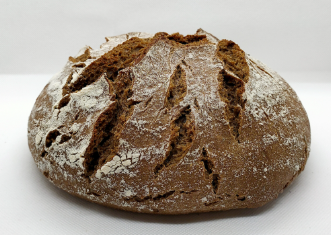
Pan de Centeno
Ingredientes: Harina de centeno integral, agua, masa madre de centeno y sal.
Elaboración: Amasado suave, fermentación prolongada en frío y corteza firme.
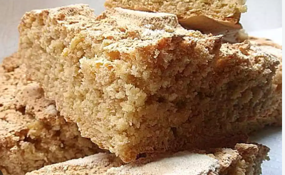
Pan de Millo (Maíz)
Ingredientes: Harina de maíz tradicional, harina de trigo de fuerza, agua y levadura.
Elaboración: Escaldado previo del maíz al estilo de la frontera y cocción lenta.
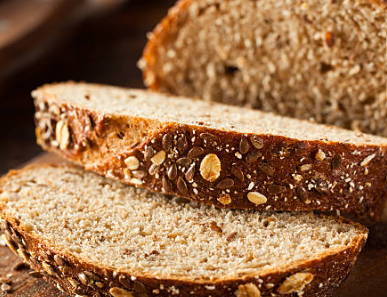
Pan Integral 100%
Ingredientes: Harina de trigo 100% integral con todo su grano, agua y sal marina.
Elaboración: Reposo en bloque para desarrollar aromas y horneado tierno.
Pastelería y Bollería
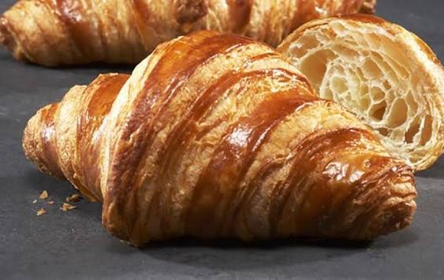
Cruasán Artesano
Ingredientes: Harina de fuerza, mantequilla pura, azúcar y levadura.
Elaboración: Hojaldrado a mano con múltiples capas y horneado hasta dorar.
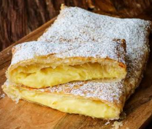
Pastel de Crema
Ingredientes: Hojaldre fino, crema pastelera artesanal infusionada con canela y limón.
Elaboración: Horneado crujiente de la base y relleno en frío para mantener la cremosidad.
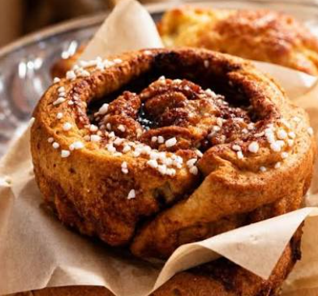
Suizos de Azúcar
Ingredientes: Masa de brioche tierna, agua de azahar, huevo y azúcar perlado por encima.
Elaboración: Doble fermentación manual para una miga súper esponjosa y horneado rápido.
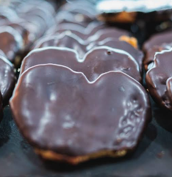
Palmera de Chocolate
Ingredientes: Hojaldre artesano inverso, azúcar caramelizado y cobertura de chocolate puro.
Elaboración: Estirado y pliegue tradicional, horneado intenso y baño caliente en chocolate.
Empanadas Caseras
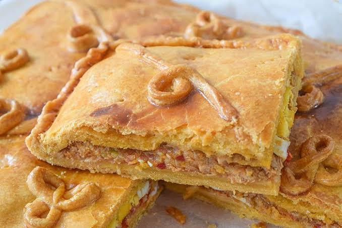
Empanada de Atún Gallega
Ingredientes: Masa de pan crujiente, sofrito tradicional de cebolla, pimientos y atún.
Elaboración: Relleno casero sazonado y horneado lentamente para unificar los sabores.
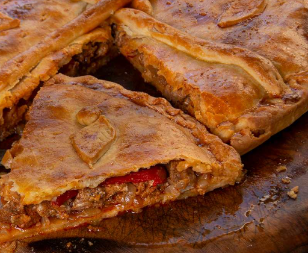
Empanada de Carne Picada
Ingredientes: Harina de trigo, carne vacuna seleccionada, cebolla, huevo duro y especias.
Elaboración: Guiso de carne a fuego lento con el punto justo de jugosidad antes del horneado.
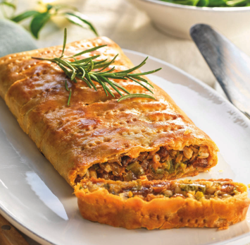
Empanada de Bacalao con Pasas
Ingredientes: Masa artesana, bacalao desmigado desalado, cebolla pochada y pasas dulces.
Elaboración: Contraste agridulce tradicional montado a mano y cocido en horno de piedra.
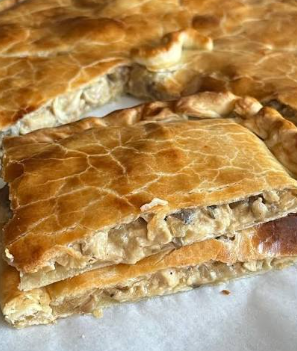
Empanada de Pollo y Setas
Ingredientes: Masa fina crujiente, pechuga de pollo desmechada, champiñones y sofrito suave.
Elaboración: Relleno cremoso sellado con el repulgue artesanal de la casa y dorado perfecto.
Dónde Encontrarnos
📍 Dirección: Av. de la Raya, S/N - Frontera Hispano-Portuguesa
📞 Teléfono: +34 900 000 000
✉️ Email: migas_amigas@gmail.com
🌐 Facebook: /migasamigas
📸 Instagram: @migas_amigas
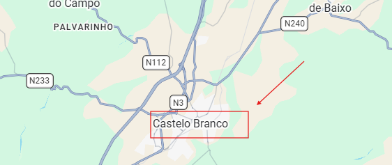
Frontera España - Portugal